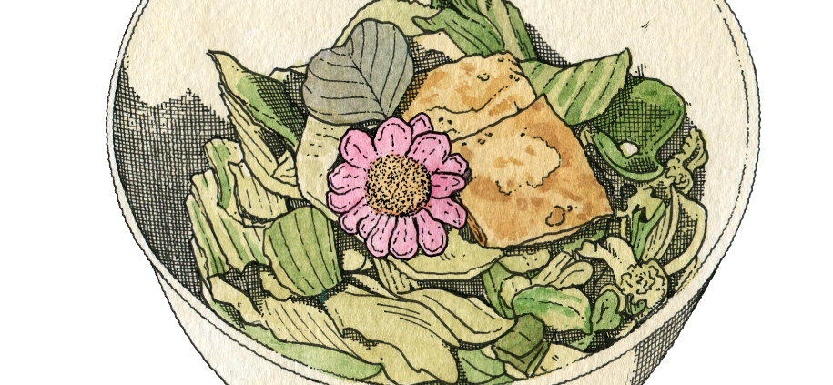

Home
Geotjeori

Description
Geotjeori is a freshly made salad with a crisp texture and refreshing flavour. It can be made with any vegetables you have. Popular green leaves in Korea include lettuce, cabbage, chicory greens and kale. This salad is particularly tasty when served with the tofu-jang shown on the previous page. The braised tofu can be eaten by itself or with bread.
Ingredients
Base
For the braised tofu
- 500g tofu (firm)
- 2 Tbsp perilla oil (olive oil can also be used)
- 2 Tbsp soy sauce (preferably Korean fermented)
- 1 Tbsp grain syrup
- 1 Tbsp roasted sesame seeds
For the sauce
- 2 Tbsp tofu-jang (optional)
- 1 Tbsp sesame oil (again, olive oil can be used as a replacement)
- ½ Tbsp soy sauce
- 1 Tbsp honey or jam
- 1 Tbsp roasted sesame seeds
Steps
For the braised tofu
- Cut one block of tofu into small rectangular pieces that are 8 cm wide, 5 cm long, and 1 cm thick. Dry off any excess moisture.
- Heat the oil in a frying pan and fry the tofu pieces on a medium heat, until golden brown on both sides.
- Turn the heat to the lowest level. Add the soy sauce, grain syrup and sesame seeds and cook the tofu pieces for a further 2 minutes on each side.
To assemble the dish
- Prepare and cut your vegetables.
- Slice the braised tofu diagonally.
- Mix the tofu-jang, sesame oil, soy sauce, honey and sesame seeds in a bowl and set to one side.
- Put the vegetables and the sauce into a bowl. Place the sliced braised tofu on top to garnish.
Recipe by Veneraboe Jeong Kwan
The Venerable Jeong Kwan is a Buddhist nun, selected as one of the Plant-forward Global 50 by Eat Forum and Culinary Institute of America, and known as ‘The Philosopher Chef’ by the New York Times. She has made influential insights into the field of Buddhist temple cooking methods, particularly those focused on the future of sustainable eating practices.
Illustration source: @thibaudherem